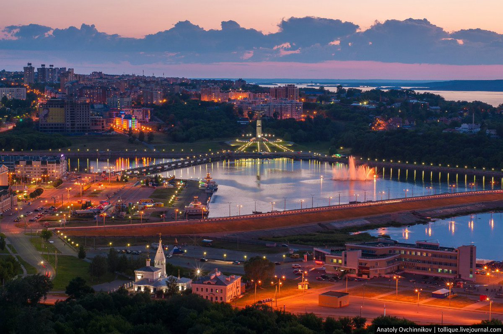
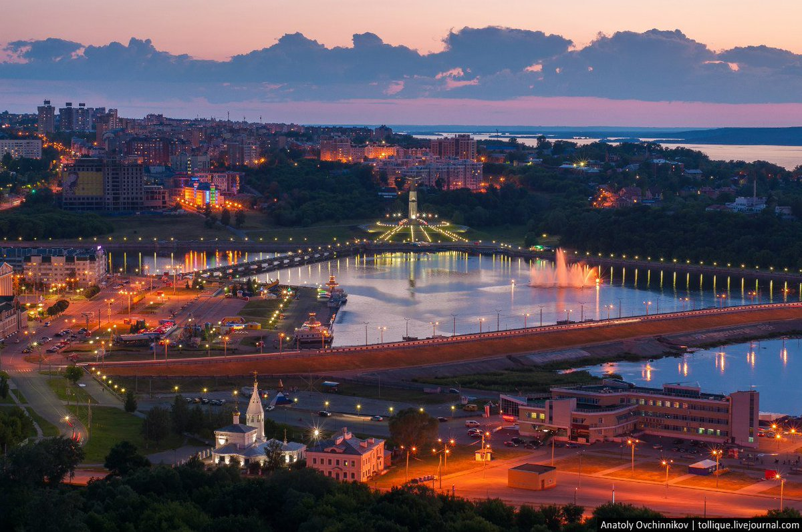

История
Чебоксары – город с многовековой историей. В письменных источниках Чебоксары упоминаются с 1469 года, когда русские воины остановились здесь на своем пути в Казанское ханство.Однако как населенный пункт он существовал значительно раньше. По данным археологических раскопок, на его месте с рубежа XIII - XIV веков существовало болгаро-чувашское поселение. Городок был известен также множеством церквей, а чебоксарские колокола знали в Лондоне и Париже.
С 1555 года, после добровольного вхождения чувашского края в состав Московского государства, город начал преобразовываться. К концу 17 века Чебоксары становятся известным торговым центром Поволжья.
Сегодня Чебоксары – современный индустриальный и культурный центр Поволжья. Здесь сосредоточен мощный экономический потенциал Чувашской Республики, основу которого составляют предприятия машиностроения, металлообработки, текстильной промышленности, энергетики, строительные организации. Город имеет развитую транспортную, инженерную и социальную инфраструктуры. Активно развивается малое предпринимательство.

 
